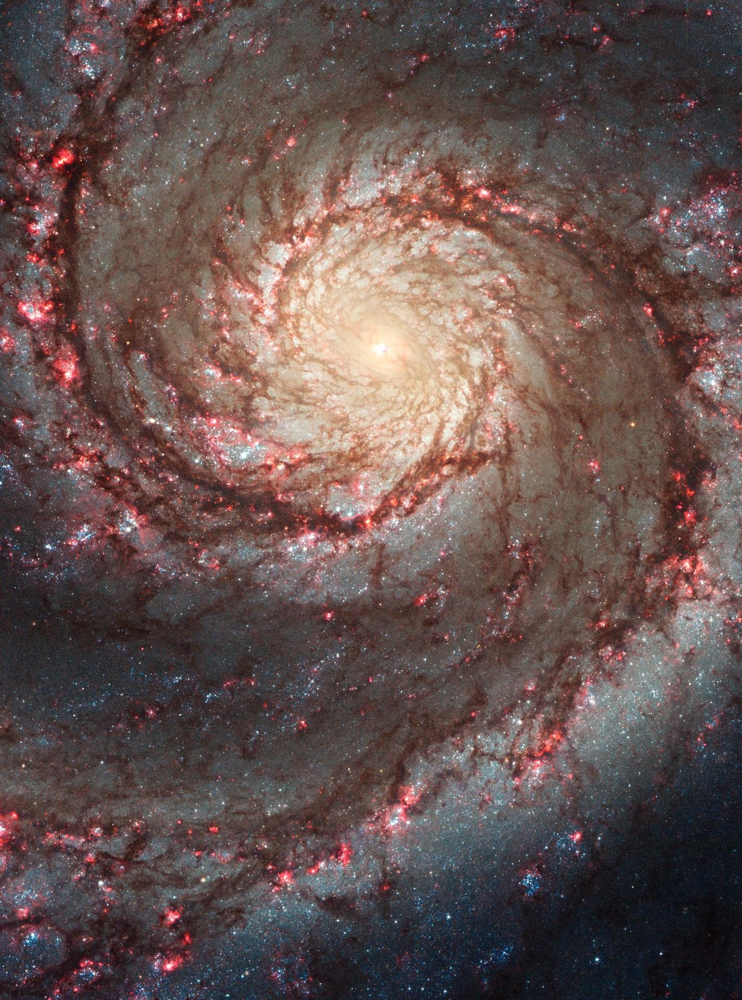
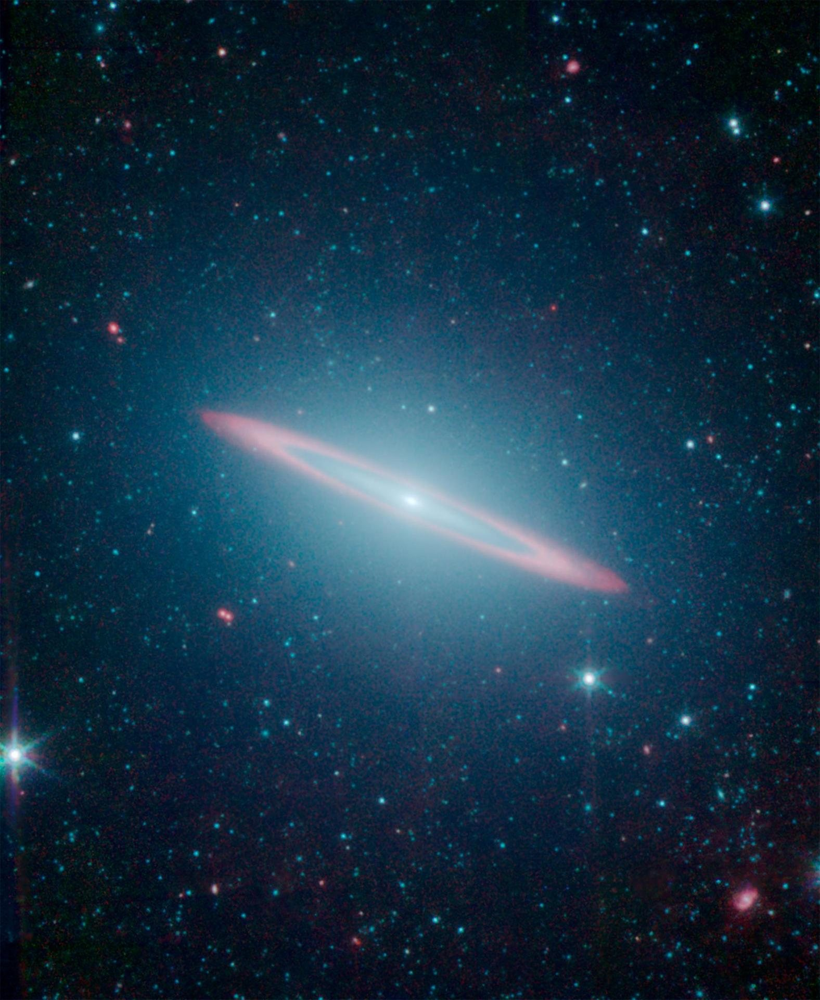
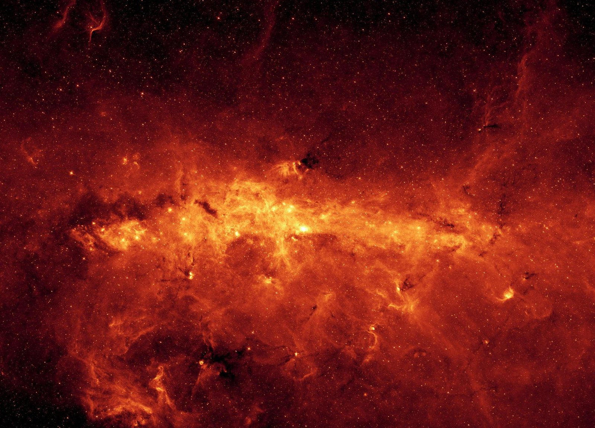
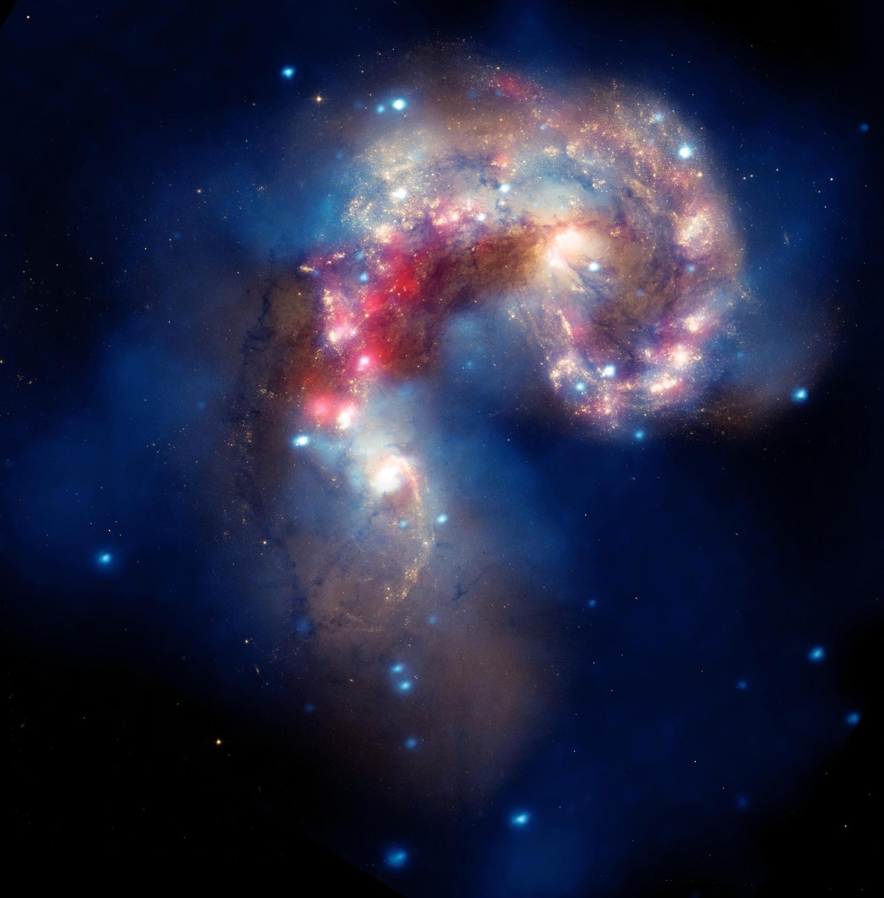

Σπειροειδείς
Με φωτεινούς βραχίονες αερίου και νεαρών άστρων που τυλίγονται γύρω από ένα λαμπρό κέντρο. Παραδείγματα: ο Γαλαξίας και η Ανδρομέδα.
Νησιά άστρων στο κοσμικό πέλαγος
Ένας γαλαξίας είναι ένα τεράστιο, βαρυτικά δεσμευμένο σύστημα από άστρα, αέριο, σκόνη και σκοτεινή ύλη. Ο δικός μας, ο Γαλαξίας, είναι μόνο ένας από τα δισεκατομμύρια που γεμίζουν το παρατηρήσιμο σύμπαν.
Οι γαλαξίες είναι οι μεγαλύτερες δομές του σύμπαντος που κρατιούνται ενωμένες με βαρύτητα. Περιέχουν από μερικά εκατομμύρια μέχρι τρισεκατομμύρια άστρα, τεράστια νέφη αερίου και σκόνης, και —όπως δείχνουν οι μετρήσεις— πολύ περισσότερη σκοτεινή ύλη απ' ό,τι κανονική ύλη.
Οι γαλαξίες δεν είναι στατικοί: περιστρέφονται, αλληλεπιδρούν βαρυτικά και εξελίσσονται. Στο κέντρο σχεδόν κάθε μεγάλου γαλαξία βρίσκεται μια υπερμεγέθης μαύρη τρύπα, με μάζα εκατομμύρια ή δισεκατομμύρια φορές μεγαλύτερη από του Ήλιου.
Η μελέτη των γαλαξιών μάς δείχνει πώς εξελίχθηκε το σύμπαν: όσο πιο μακριά κοιτάμε, τόσο πιο πίσω στον χρόνο βλέπουμε. Οι μακρινοί γαλαξίες μοιάζουν πιο μικροί, πιο άτακτοι και πιο «μπλε» — νεαρά συστήματα σε διαδικασία σχηματισμού.
Ο Γαλαξίας (Milky Way) είναι ένας σπειροειδής γαλαξίας με μπάρα, διαμέτρου περίπου 100.000 ετών φωτός. Ο Ήλιος βρίσκεται σε έναν από τους βραχίονες, περίπου 26.000 έτη φωτός από το κέντρο, και ολοκληρώνει μια περιστροφή γύρω του σε περίπου 230 εκατομμύρια χρόνια — μια «γαλαξιακή χρονιά».
Το κέντρο του Γαλαξία, στην κατεύθυνση του αστερισμού του Τοξότη, κρύβεται πίσω από πυκνή σκόνη. Εκεί βρίσκεται ο Τοξότης A*, μια υπερμεγέθης μαύρη τρύπα με μάζα περίπου 4 εκατομμυρίων ηλιακών μαζών. Η ύπαρξή της επιβεβαιώθηκε από τις τροχιές άστρων που κινούνται γύρω της με τεράστιες ταχύτητες.
Γύρω από τον δίσκο του Γαλαξία υπάρχει ο «γάλος»: μια σφαιρική περιοχή με παλιά άστρα και σφαιρωτά σμήνη. Ο Γαλαξίας περιβάλλεται επίσης από έναν τεράστιο, αόρατο «φωτοστέφανο» σκοτεινής ύλης.
Ο Edwin Hubble ταξινόμησε τους γαλαξίες με βάση το σχήμα τους — μια ταξινόμηση που χρησιμοποιείται ως σήμερα, με προσθήκες.

Με φωτεινούς βραχίονες αερίου και νεαρών άστρων που τυλίγονται γύρω από ένα λαμπρό κέντρο. Παραδείγματα: ο Γαλαξίας και η Ανδρομέδα.

Ομαλοί, ωοειδείς σχηματισμοί με παλιά άστρα και ελάχιστο αέριο. Συνήθως προέρχονται από συγχωνεύσεις γαλαξιών.

Σαν τους σπειροειδείς, αλλά με μια ευθύγραμμη «μπάρα» άστρων να διασχίζει το κέντρο. Ο δικός μας Γαλαξίας ανήκει εδώ.

Χωρίς κανονικό σχήμα, συχνά μικροί και πλούσιοι σε αέριο, με έντονο ρυθμό σχηματισμού άστρων. Συχνά συνοδεύουν μεγαλύτερους γαλαξίες.
Ο Γαλαξίας δεν είναι μόνος: ανήκει στο Τοπικό Σμήνος, μια ομάδα περίπου 80 γαλαξιών που εκτείνεται σε 10 εκατομμύρια έτη φωτός. Τα δύο μεγαλύτερα μέλη είναι ο Γαλαξίας και η Ανδρομέδα (M31), ακολουθούμενες από τον Τριγωνισμό (M33).
Γύρω από τον Γαλαξία περιφέρονται δεκάδες μικρότεροι «δορυφορικοί» γαλαξίες, όπως τα Νέφη του Μαγγελάνου — ορατά με γυμνό μάτι από το νότιο ημισφαίριο. Η Ανδρομέδα πλησιάζει τον Γαλαξία με ταχύτητα περίπου 110 χλμ./δευτερόλεπτο και σε περίπου 4,5 δισεκατομμύρια χρόνια οι δύο γαλαξίες θα συγχωνευτούν σε έναν μεγαλύτερο ελλειπτικό γαλαξία.
Το Τοπικό Σμήνος είναι με τη σειρά του μέρος της Υπερσυστάδας της Παρθένου και της ακόμη μεγαλύτερης δομής Laniakea. Σε κοσμική κλίμακα, οι γαλαξίες σχηματίζουν νήματα και «τοίχους» γύρω από τεράστια κενά.
Οι συγκρούσεις γαλαξιών είναι από τα πιο βίαια και ταυτόχρονα πιο δημιουργικά φαινόμενα του σύμπαντος. Όταν δύο γαλαξίες συγκρούονται, τα άστρα τους σπάνια χτυπούν μεταξύ τους — οι αποστάσεις είναι τεράστιες. Όμως τα νέφη αερίου συγκρούονται, συμπιέζονται και πυροδοτούν εκρηκτικό σχηματισμό νέων άστρων.
Οι βαρυτικές αλληλεπιδράσεις παραμορφώνουν τους δίσκους και δημιουργούν «ουρές» από άστρα και αέριο. Με τον χρόνο, οι δύο γαλαξίες συγχωνεύονται σε έναν, με τα κέντρα τους να ενώνονται και τις κεντρικές μαύρες τρύπες να σχηματίζουν ένα δυαδικό σύστημα.
Το διαστημικό τηλεσκόπιο Hubble και το James Webb έχουν καταγράψει εκατοντάδες τέτοιες συγκρούσεις σε διάφορα στάδια — από τα πρώτα «αγγίγματα» μέχρι τα τελικά συγχωνευμένα σώματα. Η μελέτη τους βοηθά να κατανοήσουμε πώς μεγάλωσαν οι γαλαξίες στο πρώιμο σύμπαν.
